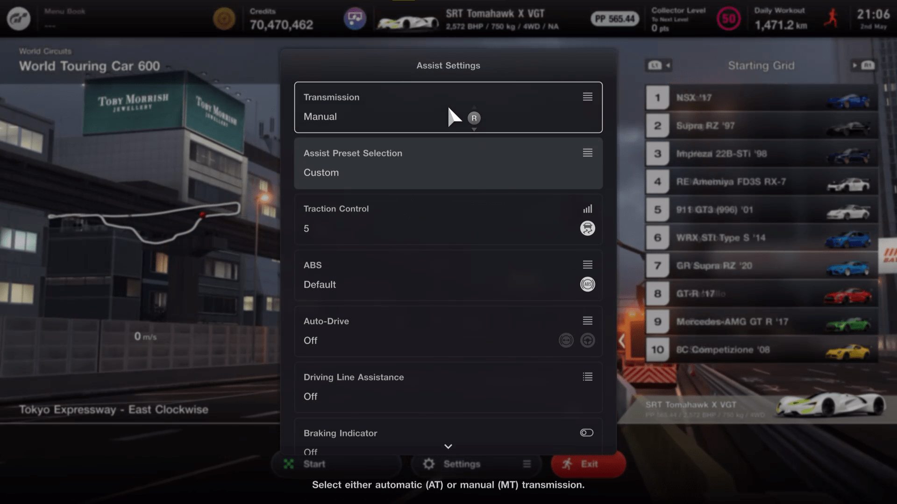

Konnichiwa friend o/
In this documentation you learn how the Tokyo WTC 600 race works and how to set up the Tokyo X AHK script to farm GT7 credits when you are away from your computer or busy doing other tasks.Please read carefully and double-check everything in this documentation if something isn't working as described. The PSNProfiles Discord has many helpful members that will assist you in getting the script running for your configuration, provided you have read and followed the directions below first.
Problemz, what is happening and why does it all work?
Some time ago i started to look for the race with the best credits per hour ratio. After an update, the WTC 600 - Tokyo Race became the clear winner and i started writing the script.
For this race we have different obstacles:
| Obstacle | Description |
|---|---|
| PP restriction | We are only allowed to enter a car with a maximum of 600 PP. |
| Tire/fuel consumption | Tire (9x) and fuel (3x) consumption is active. That means we must find the best way to finish the race with the least RNG possible. (Worn tires can lead to spinouts, we must not not run out of fuel, etc.) |
| Track condition | Track conditions There are 12 laps total, and the race starts with a very wet track. The track dries throughout the race and and we must react accordingly in order to not spin out or run into obstacles that we can’t recover from (mainly barrels in the hairpin turn). |
| AI/Opponents | You start the race with 15 other opponents. We try to avoid them as much as possible in order to not spin out or miss set detection pixels (explained later). |
| Hairpin turn | There is a hairpin in this track. And it is here to make our scripting lives horrible.The inner side is blocked by big cones, hindering us from just grinding the inner part of the turn.On the outer side we have small cones and 90° walls. The walls are hindering us from just grinding the outside, the small cones often resets our car (when stuck under the car), spawning us back in the first gear. |
Let's start explaining how we mastered this race to earn some good credits:
Overcoming the obstacles. 1 by 1.
We use a bug in the code to jump below the allowed PP, but still having the fastest car ( Dodge SRT Tomahawk X VGT). We manipulate the gear ratios to a point, where the PP calculation shows PP.From there we fiddle with values until the PP calculation is under 600 PP.This still works after the PP-Patch.The race starts with a very wet track. We have to start with intermediates.After a few laps, the track starts to get dryer, but we can't just switch to Hards. We are not driving the ideal line.
We hit some wet spots here and there, therefore we stay on intermediates for the whole race. Otherwise we would risk to RNG-Spin at many different spots, which endangers ours consistency.I found out, that there is an internal cooldown for the penalty counter.If you receive a penalty and hit or grind a wall/part of the track within 6 seconds, the internal cooldown gets reset.You still collect penalties in a internal penalty storage.The first time you're not hitting something for 6 seconds, the penalty gets triggered and is added to your current penalty.I also found out, that if you keep grinding the wall while serving a penalty, your penalty storage gets reset. If we just keep collecting penalties and finish the race without ever triggering/serving them, we end in a blackscreen and have to close the game and never receive credits.We use all of this to our advantage:We only trigger and serve a 5 second penalty every lap and reset our internal penalty storage, even if we are grinding walls 90% of the time, filling our internal storage.The tires consumption rate is at 9x.We already know that we keep the Intermediates. We use the pit stop to always, consistently, trigger a new 5 second penaltyWe're switching tires every lap - to always have the same behaviour on track, with our set timings/speeds. The fuel consumtion rate is at 3x.Because of our frequent pit visits, we can drive with the fuel map setting 1 (Power).We fill up completely in Lap 6 and continiue driving until the race is finish, after lap 12.We mainly use the pit stops to control our distance to the AI cars.We are using set wait times, depending on our current lap and AI position at this time of the race. There are 2 timings at the momement. Safest: This one always stays behind AI, therefore its slower but we never see AI. Risky: With this timings, we overtake AI on different parts of the track, but never in the hairpin turn.Welcome to the run/consisteny killer #1, the hairpin. After many hours and iterations, our current most consistent way to handle the hairpin is this:We place our car on the left wall, controlling our speed, when reaching the turn detection point. We then steer to the right, release acceleration and reach the other side's left wall. This reads so simple, but it's really much more complicated.You will see why, pretty soon, running the script.
About pixel detection:
This script relies on the detection of specific color pixels at given coordinates to determine the position of the car relative to the racetrack, also some UI elements and respond accordingly. Pixel detection can be affected by a number of factors such as PlayStation version, PC performance, and network throughput, latency and stability. There is also a degree of variance that happens with every race. Although we have tried to remove as much of this as possible by pitting every lap and avoiding AI in the hairpin, there is still randomness in AI behavior or in things like how the cones in the hairpin react when hit. As such, although we have included a number of variables that allow you to fine tune the script for your specific setup (hairpin turn delay/pit timings), but do not expect to see a 100% completion/win rate. A 75%-90% success is achievable for most people when the correct hairpin turn delay was found.Requirements & Informations
Hardware:
Software:
Download and install:
Windows Settings:
Playstation settings:
Ingame:
GT7 Settings:
_car build:
//car settings - 1 // car settings - 2 // car settings - 3_misc settings:
// difficulty Setting // display settings // driving gear
// driving gear
_after race start:
_-controller settings:
// controller - 1 // controller - 2
// controller - 2
_-assists settings:
// assists - 1 // assists - 2_-cockpit:
// cockpit - 1Tokyo X features:
The script offers you following features:
You start after entering the WTC 600 Tokyo race, pause and hover over "Retry".Tokyo WTC600 championship can be found in Asia, it is (currently) the last race option at the Tokyo Expressway track.In the main GUI you can see your current location on the track, in which lap you are (also visualized by a progress bar) and check out your session/all time stats.
Select between 2 different pit stop timings.Safe (slower): You always stay behind the AI cars after you are in first place. Risky (faster): You overtake AI cars, exception: hairpin turn.
Select an option from the dropdown menu, the values are instantly saved and active.You can check out both timings and decide whats suits you better.
...myths says there is even a 3rd option
Hairpin settings:The hairpin turn delay in ms dictates how fast the script reacts and turns right after fining the pixel we defined. Start with default settings and watch how your hairpin turns look. In the first lap, the hairpin turn can be pretty wide, they will then be good/perfect for the remaining laps.You can try out the option "Dynamic Turn Delay" and find your perfect setup. It measures the time between two detection points and increases/decreases the delay depending on your speed.
Set detection colors:Grab: Pit stop Color - here you can grab the current color when you are stuck in the pit menu (tire selection).You can also manually enter the Hex-Color code when double-clicking on the colored rectangle.Grab: Restart color - here you can grab the current color when you are stuck in the replay window.You can also manually enter the Hex-Color code when double-clicking on the colored rectangle.
Other Features:Save clip after reset - use the Playstation feature to record a 3 minutes clip after a reset is triggered.
You can send race reports to your Telegram Account.Here is a quick guide how to set it up:
- Open Telegram, and start a conversation with @BotFather
- In the conversation with @BotFather, type ‘/newbot’.
- Give your bot a nickname, like BotFather instructs you.
- Pick a username for the bot as BotFather instructs you.
- BotFather congratulates you and gives you the HTTP API token. This is what you plug into ‘Telegram Bot Token’ inside the Notifications/API settings in the script.
- Create a new group chat in Telegram, where you invite your bot and @RawDataBot
- Type ‘/start’ and the Raw Data Bot will spit out some data. Look for “chat” and specifically “id”. This is what you plug into ‘Telegram Chat ID’. Caution: the ID is not just a number, it also has a special character before the number that you MUST include!
You can set the number of wins until the script stops. Default value is 0 (infinite). To activate this feature, enter your wanted number with the Up-Down control and HIT the button below. It is changing its text, depending on how many wins you set.
FAQ
Can i change the pit stop timings while the script is running? Yes, you can do it and the script will pull the correct timing for the coming pit stop.
My race failed. Is something wrong? No. Failures will happen due to Randomness. Script is designed to work most of the time, but failures are inevitable.
I can't get my PP to match yours! Help?! CHECK THE TOE!!!!!
Why do I pit every lap? Wouldn't it be faster to not pit so much? Faster, yes. But slow is more reliable and the benefit doesn't outweigh the risk.
How long can I safely keep my Playstation running? That's not up to us. Your mileage may vary. Be responsible.
What do I do with all these credits? You do you, pikachu.
How long do I have before this gets fixed? Probably best to think of a patch coming immediately.
Why are you doing this? To show that we can.
Can I get a beta version of whatever you are working on next? If this lives long enough for updates to be made, they will be released as they are finished.
Do starting grids matter? No.
How fast are the laps? Anywhere between 2:00 and 3:00 depending on pit delay timings and if you happen to get stuck on something for a moment. Before you @ us... slow is reliable. Reliable is enriching.
What should I do if I can't get it to work? Clubman is great. Panam still works. Ask in the Discord, but know you have options.
Changelog
- Initial public release Please provide as much information as possible when asking for help (last status text, lap, location - optimally with a video clip).